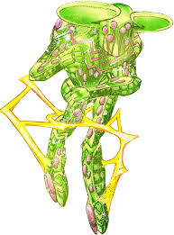
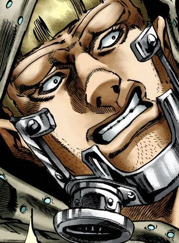

Johnny Joestar
Descripción: Protagonista de SBR, un ex-jinete de carreras y parapléjico que busca redimirse y recuperar la movilidad de sus piernas.
Historia: Johnny Joestar, nacido como Jonathan Joestar, era un jinete de caballos exitoso y famoso en Kentucky. Su vida cambió drásticamente tras un accidente que lo dejó paralizado de la cintura para abajo, sumiéndolo en una profunda depresión y amargura. La relación con su familia, especialmente con su padre, se deterioró debido a las altas expectativas que no pudo cumplir después del accidente.
La vida de Johnny cambió cuando conoció a Gyro Zeppeli durante la carrera Steel Ball Run, una competencia a campo traviesa con una gran recompensa. Johnny vio en las técnicas de rotación de Gyro una esperanza para curar su parálisis. Decidido a recuperar su movilidad, Johnny se une a la carrera. A medida que avanza, desarrolla una amistad profunda con Gyro y descubre un nuevo sentido de propósito y determinación. Johnny busca las partes del cadáver sagrado, creyendo que pueden curarlo y con el objetivo de encontrar redención y comprender su propio valor.
Stand:Tusk (Act 1-4)
act 1: En su forma inicial, Tusk permite a Johnny disparar sus uñas como si fueran balas giratorias. Estas uñas se regeneran después de un tiempo, permitiéndole un ataque constante.
uso: Las uñas giratorias son utilizadas principalmente como un ataque a distancia. Tienen una fuerza perforante significativa, permitiendo a Johnny atacar a sus enemigos desde lejos y causarles daño.

act 2:Esta forma mejora la capacidad de las uñas giratorias, permitiendo que giren durante más tiempo y con mayor potencia. Johnny puede manipular la trayectoria de las uñas con mayor precisión.
uso:Con Act 2, Johnny gana más control y fuerza en sus ataques. Las uñas no solo perforan con mayor eficacia, sino que también pueden seguir trayectorias curvas para alcanzar objetivos más difíciles.

act 3:Tusk Act 3 introduce la capacidad de crear agujeros dimensionales al disparar sus uñas. Estos agujeros pueden transportar objetos a través del espacio, permitiendo a Johnny moverse de manera única.
uso:Esta habilidad ofrece ventajas estratégicas, ya que Johnny puede usar los agujeros dimensionales tanto para atacar como para evadir. Le proporciona una movilidad inusual y la capacidad de sorprender a sus enemigos.

act 4: La forma más avanzada de Tusk, conocida como Act 4, utiliza la "Rotación Dorada". Esta técnica permite a Johnny manipular la gravedad y el espacio a través de una rotación perfecta e infinita. La Rotación Dorada es una técnica casi imparable que puede atravesar dimensiones y causar un daño devastador.
uso:Act 4 convierte a Johnny en un combatiente extremadamente poderoso. Puede enfrentarse a enemigos formidables como Funny Valentine, usando la Rotación Dorada para moverse libremente y manipular su entorno. Esta técnica no solo es destructiva sino también increíblemente versátil, permitiendo a Johnny superar casi cualquier obstáculo.
Gyro Zeppeli
Descripción: Un talentoso jinete y maestro de la técnica de la Rotación, participa en la carrera para salvar a un niño condenado a muerte.
Historia:cuyo nombre real es Julius Caesar Zeppeli, es un ex verdugo de Nápoles que participa en la carrera Steel Ball Run para salvar a un niño injustamente condenado a muerte. Proveniente de una familia de verdugos, Gyro busca romper con la tradición familiar y usar sus habilidades para el bien. Su motivación principal es ganar la carrera y así obtener la amnistía para el niño condenado.
Stand: Ball Breaker
Habilidades de Ball Breaker:
Rotación: Gyro utiliza dos bolas de acero que gira con precisión increíble. La "Rotación" se basa en el concepto de la energía giratoria perfecta, que puede tener efectos devastadores sobre sus oponentes.
efectos de la rotacion:Al aplicar la Rotación, Gyro puede afectar tanto el cuerpo como el tiempo de sus enemigos. Los ataques con las bolas de acero pueden causar envejecimiento acelerado y daño interno significativo.
Manifestación del Stand: Breaker se manifiesta cuando Gyro perfecciona la técnica de la Rotación, otorgándole un poder devastador. Este Stand es la encarnación del poder giratorio que Gyro ha dominado.

Lucy Steel
Descripción: Joven esposa de Stephen Steel, se involucra en la carrera para descubrir la verdad detrás de la misma.
Historia:Lucy se casó con Steven Steel, un hombre mucho mayor que ella, en un matrimonio arreglado que inicialmente parecía ser por conveniencia. Sin embargo, a medida que la carrera avanza, se revela que Lucy y Steven comparten un profundo amor y respeto mutuo. Lucy, a pesar de no ser una corredora oficial, juega un papel crucial al infiltrarse en las altas esferas del poder, especialmente al acercarse al presidente Funny Valentine y descubrir sus verdaderas intenciones.
Stand:ninguno
Diego Brando (Dio)
Descripción: Ambicioso jinete británico, una versión alternativa del conocido villano Dio Brando.
Historia:Diego tuvo una infancia difícil. Su madre trabajaba duro para mantenerlo, pero murió cuando él era joven, dejándolo a cargo de un despiadado patrón. Con una fuerte determinación para escapar de la pobreza, Diego desarrolló un intenso deseo de superar a todos y hacerse un nombre en el mundo. Su talento excepcional como jinete lo llevó a los Estados Unidos, donde se unió a la carrera Steel Ball Run.
Stand:Scary Monsters
habilidades de scary Monsters:
Transformación en Dinosaurio:Scary Monsters permite a Diego transformarse en un dinosaurio. En esta forma, obtiene fuerza, velocidad y agilidad mejoradas, junto con sentidos agudizados y garras afiladas.
Control de Dinosaurios:Diego puede convertir a otros seres vivos en dinosaurios bajo su control, manipulándolos para que sigan sus órdenes y ataquen a sus enemigos.
Regeneración y Durabilidad:En su forma de dinosaurio, Diego posee una capacidad regenerativa avanzada, lo que le permite recuperarse rápidamente de heridas y daños.
Diego (AW)
Descripción: una versión alternativa de Diego Brando en "Steel Ball Run". Este Diego proviene de un universo paralelo y es traído al mundo principal por Funny Valentine utilizando su Stand, Dirty Deeds Done Dirt Cheap (D4C).
Historia:En su universo original, Diego Brando siguió un camino similar al de su contraparte en el universo principal, con una vida marcada por la pobreza, la ambición y la búsqueda de poder. Sin embargo, debido a las diferencias en su entorno y las circunstancias específicas de su universo, este Diego desarrolló habilidades y motivaciones únicas.

Stand:The World
Habilidades de The World:
Detención del Tiempo:la habilidad principal de The World es detener el tiempo. Durante el tiempo detenido, Diego puede moverse y actuar libremente mientras todo lo demás permanece inmóvil. Esta habilidad le da una ventaja estratégica abrumadora en combate.
Mountain Tim
Descripción: Sheriff de Texas y uno de los participantes de la carrera, conocido por su habilidad única con la cuerda.
Historia: Mountain Tim es originario del oeste de los Estados Unidos y tiene una reputación como un vaquero hábil y respetado. Antes de unirse a la carrera, trabajó como cazador de recompensas y fue conocido por su destreza con la cuerda. A lo largo de la carrera, Tim demuestra ser un personaje honorable y valiente, dispuesto a ayudar a otros corredores en apuros y enfrentarse a los antagonistas que amenazan la integridad de la competencia.

stand:Oh! Lonesome Me
habilidades:
Desmontaje Corporal:La habilidad principal de Oh! Lonesome Me es permitir a Mountain Tim desmontar su propio cuerpo en segmentos conectados por una cuerda. Puede separar partes de su cuerpo y moverse a través de espacios pequeños o difíciles de alcanzar.
Manipulación de Cuerdas: Tim puede controlar cuerdas con gran precisión y habilidad, utilizándolas tanto para el combate como para la movilidad. Las cuerdas pueden ser usadas para atrapar o inmovilizar a sus enemigos, y también para maniobras evasivas.
Reconstrucción Rápida:Tim puede reconstruir rápidamente su cuerpo después de desmontarlo, lo que le permite recuperarse de ataques y moverse de manera ágil en el campo de batalla.

Sandman
Descripción: Nativo americano con habilidades físicas excepcionales, participa en la carrera para ayudar a su tribu.
Historia:Sandman proviene de una tribu nativa americana y se une a la carrera Steel Ball Run con la esperanza de ganar el premio en efectivo para salvar a su pueblo. Su tribu enfrenta la expropiación de sus tierras por parte del gobierno estadounidense, y Sandman ve la carrera como su última oportunidad para obtener los fondos necesarios para comprar de nuevo su territorio y proteger a su gente.
Stand: In a Silent Way
Habilidades de In a Silent Way:
Manipulación de Sonido:in a Silent Way puede almacenar y liberar sonidos en objetos o en el aire. Estos sonidos pueden ser tan simples como un latido o tan complejos como una explosión.
Materialización del Sonido:Sandman puede convertir sonidos en formas físicas. Por ejemplo, puede almacenar el sonido de un grito en un objeto y, al activarlo, ese objeto puede liberar una onda de choque.
Versatilidad en el Uso del Sonido:Las habilidades de In a Silent Way son extremadamente versátiles, permitiendo a Sandman utilizar el sonido tanto para el combate como para la evasión. Puede crear distracciones, ataques sorpresa y defensas a partir de sonidos almacenados.

Funny Valentine
Descripción: Presidente de los Estados Unidos, principal antagonista de la serie con ambiciones de poder absoluto.
Historia:Funny Valentine es el presidente de los Estados Unidos en la línea de tiempo de "Steel Ball Run". Su presidencia es marcada por una ambición desmedida y un deseo de asegurar el poder absoluto para proteger y elevar a su país, y a él mismo, a un estatus casi divino. Para alcanzar sus objetivos, Valentine está dispuesto a tomar medidas extremas, incluso si eso significa violar la ley y los principios éticos.
Stand: Dirty Deeds Done Dirt Cheap (D4C)
Habilidades de D4C:
Viaje entre Universos:D4C le permite a Valentine moverse entre diferentes universos paralelos. Esta habilidad le da la capacidad de alterar la realidad y explorar distintas versiones del mundo para su beneficio.
intercambio de Objetos:Valentine puede intercambiar objetos y personas entre universos paralelos. Esto le permite manipular eventos y obtener ventajas en situaciones de combate al alterar el entorno a su favor.
Invulnerabilidad Relativa:En su universo original, Valentine es extremadamente difícil de dañar debido a las habilidades de su Stand. Puede evitar ataques y manipular la realidad de una manera que lo hace casi invulnerable.
pocoloco
Descripción: un corredor conocido por su actitud relajada y su increible suerte.
Historia:Pocoloco es un hombre de origen humilde que vive en Nueva Orleans. Antes de unirse a la carrera, lleva una vida sencilla y sin muchas expectativas. Sin embargo, un día, después de consultar a una adivina, se le dice que está destinado a tener una increíble racha de buena suerte en los próximos dos meses. Inspirado por esta predicción, Pocoloco decide participar en la carrera Steel Ball Run, confiando en que su suerte lo llevará a la victoria y a la riqueza.
Stand: hey ya!
Habilidades de Hey Ya!:
ncreíble Buena Suerte:La principal habilidad de Hey Ya! es otorgar a Pocoloco una suerte fenomenal. Esta suerte se manifiesta en forma de eventos afortunados que lo ayudan a superar obstáculos y desafíos durante la carrera.
Intuición y Consejos:Hey Ya! puede hablar con Pocoloco y darle consejos e indicaciones sobre qué hacer a continuación. Aunque sus consejos pueden parecer triviales o confusos, casi siempre resultan ser beneficiosos.
familia boom boom
Descripción:notorios por su comportamiento criminal y su uso de habilidades Stand únicas con la intención de robar y sabotear a otros corredores.
Historia:La Familia Boom Boom está compuesta por el patriarca Benjamin Boom Boom y sus dos hijos, Andre Boom Boom y L.A. Boom Boom. Son una familia de forajidos y criminales que han vivido al margen de la ley, dedicándose a actividades delictivas para sobrevivir y prosperar.
la familia esta conformada por:
Benjamin boom boom El patriarca de la familia, conocido por su comportamiento violento y despiadado.

andre boom boom El hijo mayor, que sigue los pasos de su padre y posee un carácter igualmente brutal.

L.A. Boom Boom:El hijo menor, que también participa activamente en las actividades criminales de la familia.

stand:Tomb of the Boom (1-3):
omb of the Boom 1 (Benjamin Boom Boom): Este Stand le otorga a Benjamin la capacidad de manipular clavos metálicos que emergen de su cuerpo. Puede lanzar estos clavos a alta velocidad, usándolos como proyectiles para atacar a sus enemigos. Los clavos también tienen propiedades magnéticas, lo que permite a Benjamin manipular objetos metálicos a su alrededor.
Tomb of the Boom 2 (Andre Boom Boom):El Stand de Andre le permite generar y controlar clavos metálicos que pueden emerger de su cuerpo o del suelo. Al igual que el Stand de su padre, estos clavos tienen propiedades magnéticas y pueden ser usados tanto para ataques a distancia como para manipulación de objetos metálicos.
Tomb of the Boom 3 (L.A. Boom Boom): El Stand de L.A. es similar a los de su padre y su hermano, permitiéndole generar clavos metálicos. Sin embargo, su Stand es más débil en comparación con los otros dos, pero sigue siendo peligroso debido a la versatilidad y la velocidad con la que puede usar los clavos en combate.

Oyecomova
Descripción:corredor que utiliza su Stand para intentar sabotear a otros competidores y asegurar su victoria en la carrera.
Historia:Oyecomova es un terrorista serbio que se une a la carrera Steel Ball Run con intenciones malignas. Su historia y motivaciones están marcadas por una vida de violencia y caos. Es conocido por sus habilidades destructivas y su disposición a utilizar la violencia para lograr sus objetivos. A lo largo de la carrera, Oyecomova se enfrenta a varios competidores y utiliza su Stand para crear explosiones y caos en el camino.
stand:Boku no Rhythm wo Kiitekure (Listen to My Rhythm)
Habilidades de Boku no Rhythm wo Kiitekure (Listen to My Rhythm):
Creación de Explosivos: La habilidad principal de este Stand es crear explosivos a partir de cualquier superficie que Oyecomova toque. Puede colocar estos explosivos estratégicamente para atacar a sus enemigos o crear obstáculos en el camino.
Detonación Remota: Oyecomova puede detonar los explosivos a distancia, lo que le permite atacar a sus oponentes desde una posición segura. Esto le da una ventaja táctica en combate.

jesucristo
Descripción:Aunque no es un personaje activo en la trama, su figura y las reliquias asociadas con él tienen una gran importancia para la historia y los personajes involucrados en la búsqueda de las partes del cadáver sagrado.
Historia:En el universo de "Steel Ball Run," Jesucristo es representado como un ser divino cuyas reliquias poseen poderes sobrenaturales. La historia establece que después de su crucifixión, el cadáver de Jesucristo fue desmembrado y sus partes quedaron dispersas por diferentes lugares. Estas partes del cadáver se convierten en el centro de la trama, ya que poseen habilidades místicas que pueden otorgar grandes poderes a quienes las reúnen.
Partes del Cadáver Sagrado:
- la cabeza
- los ojos
- el torso
- los brazos
- las piernas
Cada parte del cadáver tiene propiedades místicas que pueden afectar la realidad y otorgar poderes extraordinarios a quienes las poseen. El objetivo de muchos personajes en la carrera Steel Ball Run, incluido el presidente Funny Valentine, es reunir todas las partes del cadáver para aprovechar sus poderes divinos.
Las partes del cadáver sagrado otorgan varias habilidades a quienes las poseen:
Curación y Regeneración: Las partes del cadáver tienen propiedades curativas que pueden sanar heridas y enfermedades.
poder divino: Poseer las partes del cadáver puede otorgar habilidades místicas y una conexión con el poder divino.
influencia sobre el destino:Las reliquias pueden alterar el destino y la suerte de quienes las poseen, afectando los eventos a su favor.

hot pants
Descripción: una agente encuvierta del vaticano.
Historia: Hot Pants es una mujer que participa en la carrera Steel Ball Run con la identidad de un hombre para ocultar su verdadero género y facilitar su misión. Su verdadero nombre no se revela en la serie. A lo largo de la historia, se revela que Hot Pants tiene un pasado trágico: su hermano menor murió trágicamente, y ella se culpa por no haberlo protegido. Este evento la motiva a unirse a la carrera Steel Ball Run para recolectar las partes del cadáver sagrado con la esperanza de obtener el poder divino y la redención.
stand:Cream Starter
Habilidades deCream Starter:
transformacion de carne: Cream Starter le permite a Hot Pants transformar su propia carne y la de otros en una sustancia parecida a una espuma o aerosol. Esta espuma puede ser usada para curar heridas, crear prótesis temporales, o disfrazarse cambiando la apariencia física.
curacion: Hot Pants puede usar Cream Starter para curar heridas, tanto las suyas como las de otras personas. La capacidad de manipular la carne le permite cerrar cortes y regenerar tejido dañado.
Disfraz y Engaño: Al transformar la carne en espuma y redistribuirla, Hot Pants puede cambiar su apariencia física, lo que le permite adoptar diferentes identidades y engañar a sus enemigos.
combate y defensa: La habilidad de manipular la carne también puede ser utilizada ofensivamente, por ejemplo, creando picos afilados o proyectiles de carne, y defensivamente, endureciendo la espuma para formar barreras protectoras.

Ringo Roadagain
Descripción: un pistolero altamente habil con un fuerte codigo de hnor y de filosofia.
Historia:Ringo Roadagain es un hombre que ha sobrevivido a una infancia traumática, incluyendo una enfermedad debilitante y una familia abusiva. Su vida cambia drásticamente cuando, después de un enfrentamiento con un ladrón, descubre su verdadera fuerza y capacidad para superar sus limitaciones. Este evento lo lleva a desarrollar una filosofía de vida basada en la auto-mejora constante y el renacimiento personal, lo que él llama "retoño" (o "rewind to the first" en inglés).
stand: mandom
Habilidades de mandom
retroceso temporalLa habilidad principal de Mandom es retroceder el tiempo exactamente seis segundos. Esta habilidad le permite a Ringo rehacer sus acciones y corregir errores cometidos en ese breve período de tiempo.
Blackmore
Descripción:Es un agente leal al presidente Funny Valentine y uno de los antagonistas de la serie.
Historia:Blackmore es un hombre misterioso y altamente competente que trabaja como agente del presidente Funny Valentine. Es un hombre de principios que cree firmemente en el destino y la misión encomendada por el presidente. Su dedicación y lealtad hacia Valentine son inquebrantables, lo que lo convierte en un adversario formidable para cualquiera que se interponga en su camino.
stand: Catch the Rainbow
Habilidades de Catch the Rainbow:
manipulacion de la lluvia:Catch the Rainbow le permite a Blackmore controlar y manipular las gotas de lluvia. Puede detenerlas en el aire, utilizarlas como plataformas sólidas para moverse y crear barreras defensivas.
desplazamiento sobre la lluvia:Blackmore puede caminar sobre las gotas de lluvia, permitiéndole moverse en cualquier dirección y alcanzar lugares inaccesibles. Esta habilidad también le da una gran movilidad en combate, haciéndolo difícil de atrapar o predecir.
ataques basados en la lluvia:Puede usar las gotas de lluvia como proyectiles afilados, lanzándolas a alta velocidad para herir o incapacitar a sus enemigos. Además, puede condensar la lluvia en formas más densas y peligrosas.
invisibilidad parcial: Al manipular la lluvia alrededor de su cuerpo, Blackmore puede volverse parcialmente invisible, lo que le permite emboscar a sus enemigos y evadir ataques con mayor facilidad.
wekapipo
Descripción:antiguo guardaespaldas napolitano que tiene un papel significativo en la narrativa debido a sus habilidades y su compleja historia.
Historia:Wekapipo es originario de Nápoles, Italia. Era un talentoso guardaespaldas que servía a la nobleza italiana. Sin embargo, su vida da un giro drástico cuando su hermana es golpeada brutalmente por su esposo, un noble italiano, y queda ciega. En un intento desesperado por proteger a su hermana y hacer justicia, Wekapipo ataca al noble. Este acto de violencia lo lleva a ser exiliado y marcado como un traidor, perdiendo todo lo que tenía en Italia.
habilidad:Wrecking Ball (no es un stand)
Habilidades de Wrecking Ball:
roacion esferica:Wekapipo utiliza esferas de acero que giran a alta velocidad. Estas esferas pueden ser lanzadas con precisión para atacar a sus enemigos y generar efectos secundarios.
Desorientación y Desbalance:Las esferas de Wekapipo pueden causar una desorientación extrema en los oponentes. Al golpear a su objetivo, las esferas inducen una rotación en el cuerpo de la víctima, afectando su equilibrio y coordinación.
Magent Magent
Descripción:un usuario de stand conocido por su lealtad hacia funny valentine
Historia:Magent Magent es un hombre originario de Australia que se une a la carrera Steel Ball Run bajo las órdenes del presidente Funny Valentine. Es un personaje conocido por su personalidad extravagante y su dedicación absoluta a su misión. A lo largo de la historia, se revela que Magent Magent ha tenido encuentros previos con otros personajes en el pasado, lo que moldea su determinación y lealtad hacia Valentine.

stand: 20th Century Boy
Habilidades de 20th Century Boy
Invulnerabilidad Absoluta:Cuando Magent Magent activa su Stand, se coloca en una posición defensiva similar a la de cuclillas y abraza sus rodillas. En esta posición, 20th Century Boy hace a Magent Magent completamente invulnerable a cualquier daño o efecto externo. Esta invulnerabilidad es absoluta y protege al usuario de cualquier tipo de amenaza, independientemente de su naturaleza.
La habilidad se activa automáticamente cuando Magent Magent siente que su vida está en peligro inminente. Durante este tiempo, no puede moverse ni cambiar de posición hasta que el peligro haya pasado por completo.

Axl RO
Descripción: hombre decidido y despiadado, cuya misión es detener a Johnny Joestar y Gyro Zeppeli en su búsqueda de las partes del cadáver.
historia:es un agente leal del presidente Funny Valentine, encargado de proteger las partes del cadáver sagrado y eliminar cualquier amenaza que se interponga en el camino de Valentine

stand:civil war
habilidades de civil war:
Manifestación de la culpa:Civil War puede hacer que los objetos, personas y recuerdos relacionados con la culpa y el arrepentimiento de una persona se manifiesten físicamente. Estas manifestaciones pueden atacar al objetivo, y si son destruidas, se multiplican y continúan persiguiendo a la persona.